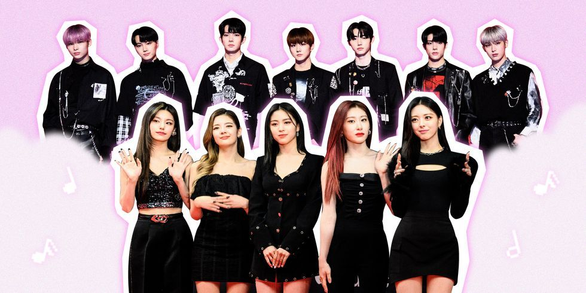

Música
KPOP

¿Qué es?
Kpop o k-pop, es también llamado pop coreano y se trata de un estilo de música que es “originaria”
de Corea del Sur y tiene como peculiaridad que se encuentra conformada por distintos tipos de música,
éste a pesar de que se encuentra compuesto por gran diversidad de géneros musicales de tipo popular
surcoreano, el término se aplica con mayor frecuencia a la Industria musical que se caracteriza por
introducir géneros de música y estilos provenientes de occidente, como por ejemplo el rock, el jazz,
hip-hop, reggae, country.
Grupos del momento
- (G)I-DLE. El top 5 de grupos femeninos de K-Pop más escuchados inicia con (G)I-DLE,
quienes alcanzaron, entre otros importantes logros, 36.8 millones de reproducciones con su éxito
"HWAA".
- Red Velvet.La banda que tuvo su comeback el pasado mes de agosto con el álbum
"Queendom" alcanzó más de 40 millones de reproducciones con la canción que da título a esta
producción, aunque su track más escuchado sigue siendo "Psycho" de 2019 con 266.7 millones de
reproducciones.
- ITZY. Con los álbumes "Guess Who" y "Crazy In Love" estrenados este año, ITZY creció
mucho en popularidad y ello se reflejó en los 96.2 millones de reproducciones que tuvo su hit
"Mafia in the Morning".
- Twice Este 2021 fue un gran año para TWICE, obteniendo los puestos más altos de su
carrera en Billboard con el estreno de su disco "Formula Of Love: O+T=<3", así como
su canción "The Feels" que duró más de 50 días en el top global de lo más escuchado de Spotify
con 80 millones de reproducciones.
FANCY MERECIA SOTY